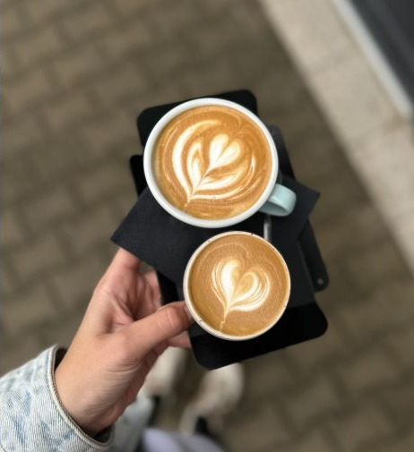
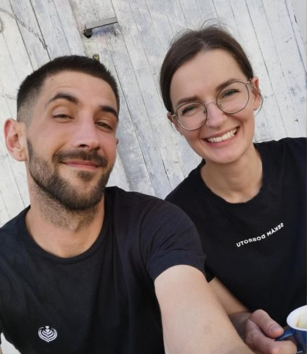

Kaviareň a pražiareň
Kaviareň s vlastnou pražiarňou. Námestie slobody, v centre Vranova.
Z piknikov na námestie.
Prvé Nashe šálky sme varili na piknikoch v prírode — kamaráti tomu hovorili mobilná kaviareň. V októbri 2022 sme sa usadili v bývalej garáži na Námestí slobody.
Od začiatku sme chceli viac než len podávať kávu: miesto, kde sa stretávajú ľudia, ktorí majú radi dobrú kávu a pokojnú atmosféru.

Prečo výberová káva?

- KvalitaVýberová káva musí pri hodnotení podľa SCA získať aspoň 80 zo 100 bodov a vo vzorke zelených zŕn nesmie mať vážne chyby.
- FérovosťPestovatelia dostanú zaplatené za kvalitu, nie len za objem.
- ČerstvosťPražíme si sami, tu vo Vranove. Z pražiarne na bar za pár dní, nie za týždne.
Kávu si pražíme sami.
Nasha je kaviareň s vlastnou pražiarňou. Všetko, čo u nás piješ, sme upražili tu vo Vranove — od espressa po filter.
Kaviarní, ktoré si kávu pražia samy, je na Slovensku stále málo, väčšina ju nakupuje hotovú. Keď pražíme sami, máme pod kontrolou celú cestu od zeleného zrna po šálku: vyberáme kávy, ladíme praženie a hneď vidíme, ako chutia za barom.
Kúpiš len u nás na predajni
- Nasha blend 90/10
- Zmes z Guatemaly, Peru a Vietnamu: 90 % arabiky a 10 % robusty, ktorá pridá telo a hustejšiu cremu. Tmavšie praženie.
- Brazília
- 100 % arabika z jednej krajiny pôvodu. Tmavšie praženie.
- Sezónna výberovka
- Výberová káva, ktorú počas roka obmieňame.
Dva mlynčeky, jeden kávovar.
V prvom mlynčeku je náš Nasha blend 90/10 — tmavšie pražený, s plným telom a hustou cremou, ktorý sa dobre spojí s mliekom. Kúpiš ho aj u nás na predajni. V druhom sa striedajú svetlejšie pražené kávy jedného pôvodu, ovocnejšie a s výraznejšou kyslosťou. Ktorú si dáš, sa rozhodneš pri bare.
Espresso ťaháme na kávovare Faema President.


Filter zalievaný ručne.
V60 zalievame ručne v drippri Origami s kónickým filtrom, AeroPress pripravujeme z 18 g čerstvo namletej kávy. A každý deň máme čerstvý batch brew z Fellow Aiden — filter z tej istej výberovej kávy, hotový hneď.
Peťo vyhral Slovakian AeroPress Championship 2026.
Nápojový lístok


Okrem kávy robíme vlastné limonády, super latte z matchy, hojichy, cvikly či kurkumy a horúcu čokoládu Lucas.
Čierna káva
Mliečna káva
Doplnky ku káve
Filtrovaná káva
Káva na ľade
Čokoláda Lucas
Super latte
Čaj ETS
Limonády
Ľadové čaje
Menej alebo viac ľadu na požiadanie.
Ceny sú v €.


Ku káve niečo sladké.
Koláče nám pečú lokálne cukrárky.

Sme Ivona a Peťo.
Spoznali sme sa pri práci s kávou a Nashu dnes vedieme spolu. Za barom s nami stojí náš tím baristov.
Občas u nás robíme cupping: ochutnávame niekoľko káv vedľa seba, tak ako ich hodnotia pražiari. Kedy bude ďalší, dáme vedieť na Instagrame.
